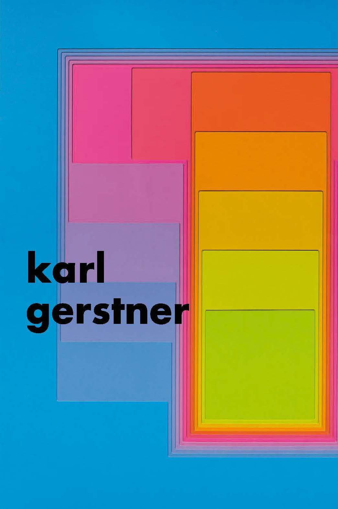

An accordion about Karl Gerstner
Completed under Doug Scott at Northeastern University for History of Graphic Design.
After being instructed to research a designer and create a printed piece to showcase their work, I selected Karl Gerstner for his brilliant work for Capital – a flexible yet robust grid that was a square sub-divided into 58 rows and columns, based on a unit of a 10-point line of typography.

The accordion itself was typeset and designed using Gerstner's Capital grid, resized for a smaller sheet of paper. In creating a dynamic artifact that extended beyond a normal accordion, its content extended beyond the normal size of a sheet of paper. When folded, the artifact folds down to a 6" by 8" rectangle.